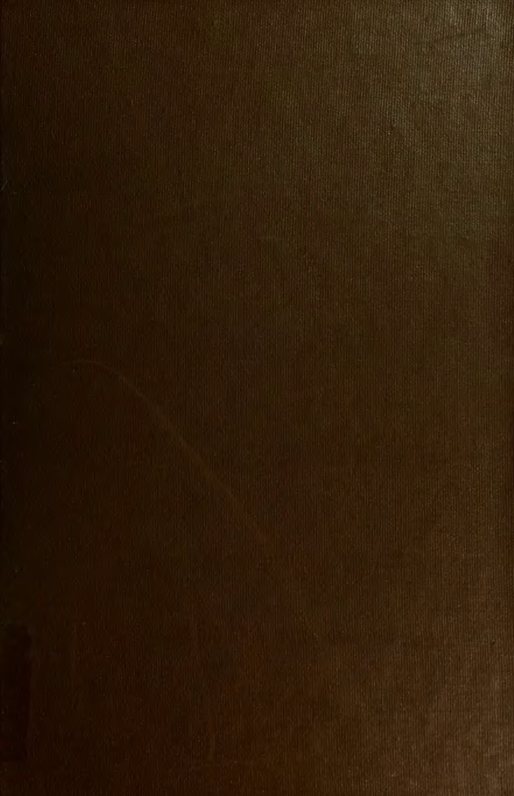
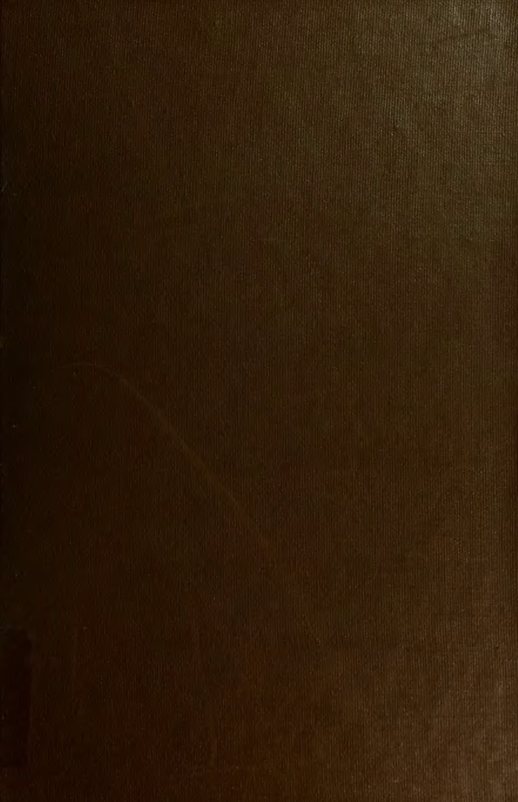
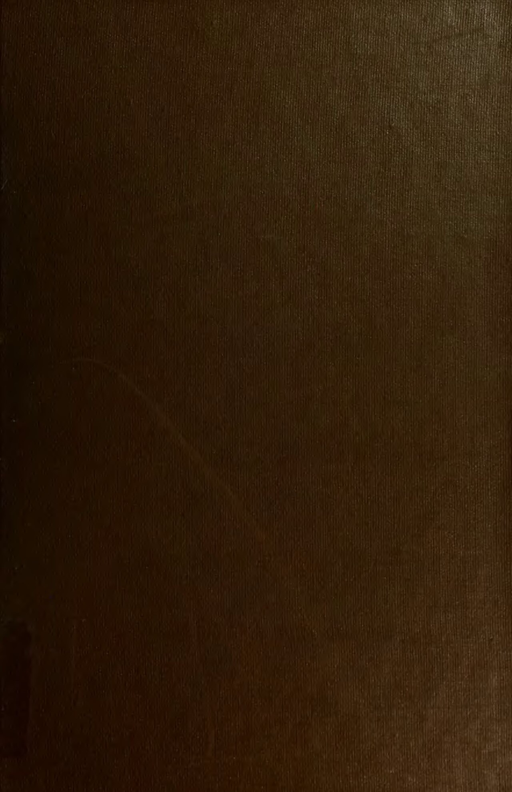

CityLoop Quest Gand

Le dragon du Beffroi a vu plusieurs générations de Gantois lever les yeux vers lui, mais il n’a pas toujours occupé exactement la même place ni conservé le même corps. Une girouette fut installée en 1377 ; les exemplaires anciens, fragilisés, ont été descendus et préservés. Le dragon actuel est donc l’héritier d’une lignée métallique. Il symbolisait la vigilance et protégeait les chartes communales, trésor politique gardé dans la tour.

Le Mammelokker doit son nom à une scène étrange sculptée sur la façade de l’ancienne prison : une jeune femme allaite un vieillard. L’histoire vient de la charité romaine. Un prisonnier condamné à mourir de faim aurait été secrètement nourri par sa fille lors de ses visites. Les gardiens, impressionnés par cette piété filiale, auraient obtenu sa grâce. Le mot populaire combine « mamme », le sein, et « lokken », attirer ou téter.

Les Gantois portent volontiers une corde blanche lors des fêtes. Cette fierté vient pourtant d’une humiliation imposée par Charles Quint en 1540. Après une révolte fiscale, des notables durent défiler avec une corde au cou, signe qu’ils méritaient la pendaison. Le surnom de Stroppendragers fut retourné contre le pouvoir : ce qui devait marquer la soumission devint un emblème d’indépendance et d’humour.
Le panneau des Juges intègres de l’Agneau mystique fut volé en 1934 dans la cathédrale Saint-Bavon. Une partie du vol fut récupérée, mais les Juges n’ont jamais reparu. Le sacristain Arsène Goedertier, mourant, déclara savoir où se trouvait le panneau sans révéler la cache. Fouilles, lettres codées et théories se sont succédé. La copie visible aujourd’hui fut peinte par Jef Van der Veken, qui aurait glissé dans un visage les traits du roi Léopold III.
Les façades du Graslei semblent médiévales d’un seul bloc, mais plusieurs ont été profondément restaurées pour l’Exposition universelle de 1913. Cette date a façonné une partie de l’image “ancienne” de Gand. Autre surprise : le canon rouge Dulle Griet, posé près de la Vrijdagmarkt, pèse plusieurs tonnes mais n’a probablement jamais joué le rôle héroïque que les légendes lui attribuent. La ville excelle à conserver des objets dont l’histoire réelle est encore plus intéressante que les récits simplifiés.

Le canon Dulle Griet, posé près de la Vrijdagmarkt, porte un nom que l’on traduit souvent par « Margot l’Enragée ». Cette énorme bombarde du XVe siècle pèse plus de douze tonnes. Elle fut emportée par les Gantois lors d’une campagne contre Audenarde, mais son efficacité militaire réelle reste moins spectaculaire que sa silhouette. On raconte qu’elle aurait tiré des projectiles gigantesques ; ce qui est certain, c’est qu’elle devint un trophée urbain, puis un point de rendez-vous dont la couleur rouge renforce le caractère légendaire.
Les cuberdons alimentent une rivalité beaucoup plus légère. Sur le Groentenmarkt, vendeurs et boutiques défendent la fraîcheur, la recette et parfois l’antériorité de leurs « neuzekes ». La coque doit rester légèrement ferme tandis que l’intérieur conserve un sirop épais. Le bonbon se garde mal et durcit avec le temps, ce qui explique son histoire surtout belge avant l’amélioration des transports. Cette fragilité donne une leçon inattendue : certains souvenirs se dégustent mieux sur place qu’ils ne voyagent dans une valise. Gand sait transformer un nez violet, une corde blanche ou un vieux canon rouge en emblèmes sans jamais perdre le plaisir de se moquer d’elle-même.
Même les noms de rues participent au jeu : ils évoquent métiers, denrées, animaux ou anciens canaux, parfois avec des traductions trompeuses. Lire une plaque puis chercher son origine transforme une simple marche en collection de micro-histoires. À Gand, l’humour local se cache souvent dans ce détail que l’on allait presque dépasser.